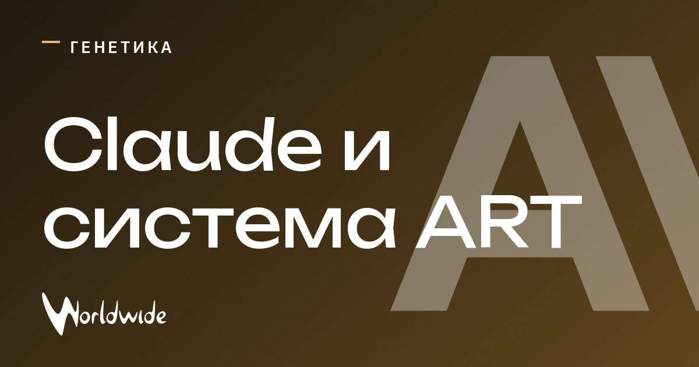

Claude нашёл в вирусах систему, похожую на CRISPR

Anthropic заявила о находке в вирусах бактерий: ART — ранее не описанной ферментной системе.
По данным компании, Claude обнаружила повторяющиеся участки ДНК, напоминающие CRISPR. Около 950 ИИ-агентов анализировали базу ДНК 21 час, а учёные затем проверили находку в лаборатории.
Функция ART пока неизвестна. Результаты ещё не прошли рецензирование.
Обновление
Claude изучила более 200 тысяч обратных транскриптаз, отобрала 3 500 кандидатов и выделила 20 для дальнейшего анализа. В ART входит уже известная обратная транскриптаза; новым оказался весь комплекс — массив коротких повторов ДНК рядом с двумя генами, один из которых кодирует белок с пока неясной функцией.
Источник: ABC Espana